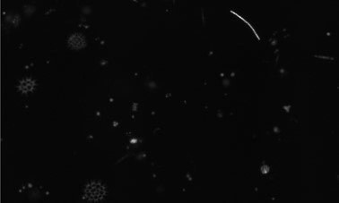
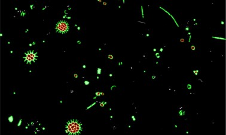
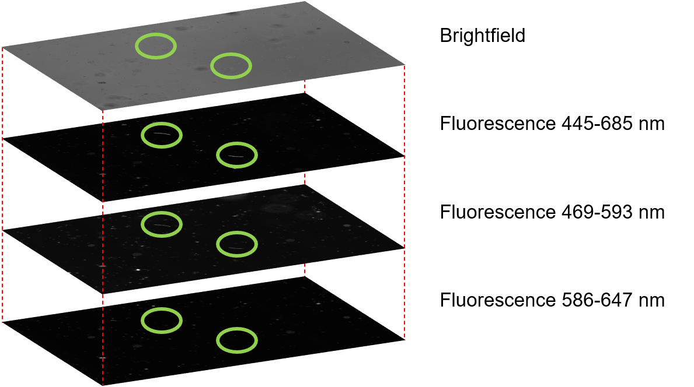
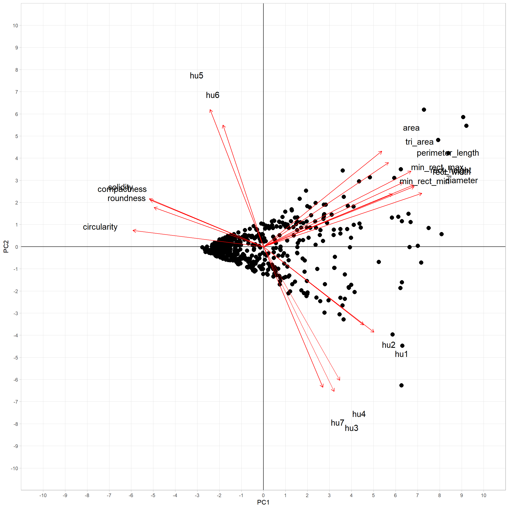
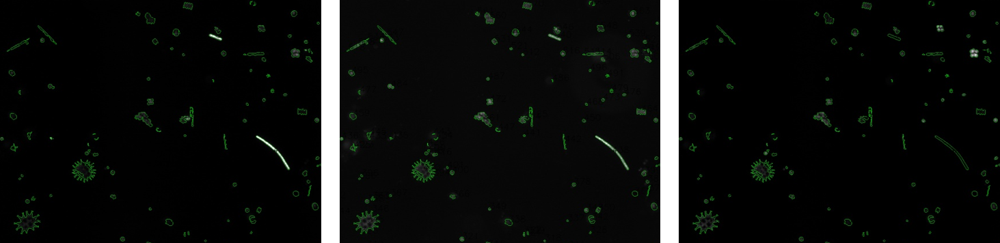

Example 3: Fluorescence intensity and shape of phytoplankton cells¶
In this example we are trying to i) detect phytoplankton cells in 1-channel images (black and white images), ii) measure their pixel-intensities (=fluorescence intensities) and their their shape, and iii) work towards building a classifier for taxonomic groups of phytoplankton.
The first two objectives are a rather low hanging fruit, as they involve classic computer vision approaches that phenopype can readily supply. The latter goal is more longterm and involves experimenting with classic shape feature detection as provided by phenopype’s shape_features function (e.g. image moments), and potentially also building up towards a deep learning pipeline usign the contours detected with phenopype. I will
update this example as work progresses.
Images kindly provided by Irene Gallego and Anita Narwani.

Input - Phytoplankton fluorescence. Each sample includes 1 brightfield gray scale image and 3 fluorescence images at different wavelengths.

Results - Phenopype thresholding function detects the contours of phytoplankton cells (green) and holes within (red).
Approach¶
All four images show the same objects, but with different pixel intensities. It may be useful to combine information from all images into the segmentation process. This is requires customization of existing workflows in Phenopype, for which the prototyping workflow may be suited best: here we have access to intermediate output, and can also integrate low level functions from the OpenCV library. Refer to Tutorial 2 for mor information about the
different workflows.
The appraoch is to load all images separately, do segmentation separately, find contours create four binary masks from all contour coordinates, combine the binary masks into a single image, find contours on the binary image.
[1] https://docs.opencv.org/master/d0/d86/tutorial_py_image_arithmetics.html

Fig. 1: Each sample includes four images: 1 brightfield (top) and 3 fluorescence measurements (black, bottom). Due to different pigments, not all spcecies are visible in each image, because of different emission spectra. For example, the two long string shaped cells only occur in two of the fluorescence channels, but not the third one or the brightfield. Therefore, including information from all images for segmentation may be useful to get close to the “true” cell count and community composition within a sample.
Prototyping workflow¶
Shape descriptors¶
With the recently (phenopype 1.0.5) introducted shape_features function you can measure a set of 43 rotation invariant features from collected contours. However, depending on your case, you may not be able to make use of all feature descriptors since some of them are not scale, rotation or translation invariant. Refer to the documentation help(pp.measurement.shape_features) to see which features are useful.
In our case, phytoplankton are scattered over the image, so we need descriptors that are at least translational and rotational invariants, whereas scale includes relevant descriptive power over phytoplankton of different sizes. Therefore we will use (some) of the basic shape descriptors and the seven Hu moments.
NOTE: This function, like most phenopype functions, is easily expandable. So if you are missing sets of shape descriptors, don’t hesitate to contact me with or do a pull request.
[1]:
import phenopype as pp
help(pp.measurement.shape_features)
Help on function shape_features in module phenopype.core.measurement:
shape_features(obj_input, df_contours=None, return_basic=True, return_moments=False, return_hu_moments=False)
Collects a set of 41 shape descriptors from every contour. There are three sets of
descriptors: basic shape descriptors, moments, and hu moments. Two additional features,
contour area and diameter are already provided by the find_contours function.
https://docs.opencv.org/3.4.9/d3/dc0/group__imgproc__shape.html
Of the basic shape descriptors, all 10 are translational invariants, 8 are rotation
invariant (rect_height and rect_width are not) and 4 are also scale invariant
(circularity, compactness, roundness, solidity).
https://en.wikipedia.org/wiki/Shape_factor_(image_analysis_and_microscopy)
The moments set encompasses 10 raw spatial moments (some are translation and rotation
invariants, but not all), 7 central moments (all translational invariant) and 7 central
normalized moments (all translational and scale invariant).
https://en.wikipedia.org/wiki/Image_moment
The 7 hu moments are derived of the central moments, and are all translation, scale
and rotation invariant.
http://www.sci.utah.edu/~gerig/CS7960-S2010/handouts/Hu.pdf
Basic shape descriptors:
circularity = 4 * np.pi * contour_area / contour_perimeter_length^2
compactness = √(4 * contour_area / pi) / contour_diameter
min_rect_max = minimum bounding rectangle major axis
min_rect_min = minimum bounding rectangle minor axis
perimeter_length = total length of contour perimenter
rect_height = height of the bounding rectangle ("caliper dim 1")
rect_width = width of the bounding rectangle ("caliper dim 2")
roundness = (4 * contour_area) / pi * contour_perimeter_length^2
solidity = contour_area / convex_hull_area
tri_area = area of minimum bounding triangle
Moments:
raw moments = m00, m10, m01, m20, m11, m02, m30, m21, m12, m03
central moments = mu20, mu11, mu02, mu30, mu21, mu12, mu03,
normalized central moments = nu20, nu11, nu02, nu30, nu21, nu12, nu03
Hu moments:
hu moments = hu1, hu2, hu3, hu4, hu5, hu6, hu7
Parameters
----------
obj_input : array or container
input object
df_contours : DataFrame, optional
contains the contours
return_basic: True, opational
append the basic shape descriptors to a provided contour DataFrame
return_moments: False, optional
append the basic shape descriptors to a provided contour DataFrame
return_hu_moments: False, optional
append the basic shape descriptors to a provided contour DataFrame
Returns
-------
df_contours : DataFrame or container
contains contours, and added features
First, we load the images.
[8]:
import os
os.listdir("images")
[8]:
['isopods.jpg',
'isopods_fish.mp4',
'phyto_445.jpg',
'phyto_469.jpg',
'phyto_586.jpg',
'phyto_bright.jpg',
'snails1.jpg',
'snails2.jpg',
'stickle1.JPG',
'stickle2.JPG',
'stickle3.JPG',
'stickleback_side.jpg',
'stickleback_top.jpg',
'worms.jpg']
[149]:
bright, df_bright = pp.load_image("images/phyto_bright.jpg", df=True) ## df=True creates a "backbone" with meta-data
fl445, df_fl445 = pp.load_image("images/phyto_445.jpg", df=True)
fl469, df_fl469 = pp.load_image("images/phyto_469.jpg", df=True)
fl586, df_fl586 = pp.load_image("images/phyto_586.jpg", df=True)
pp.show_image([bright, fl445, fl469, fl586], max_dim=1000, position_offset=200)
dirpath defaulted to file directory - E:\git_repos\phenopype\tutorials\images
Directory to save files set at - E:\git_repos\phenopype\tutorials\images
dirpath defaulted to file directory - E:\git_repos\phenopype\tutorials\images
Directory to save files set at - E:\git_repos\phenopype\tutorials\images
dirpath defaulted to file directory - E:\git_repos\phenopype\tutorials\images
Directory to save files set at - E:\git_repos\phenopype\tutorials\images
dirpath defaulted to file directory - E:\git_repos\phenopype\tutorials\images
Directory to save files set at - E:\git_repos\phenopype\tutorials\images
Now the segmentation - note that the brightfield image requires a different method than the fluorescence images, which can be run on the default settings (method="binary, value=127). However, they need to be inverted for the algorithm to work.
[116]:
bright_bin = pp.segmentation.threshold(bright, method="adaptive", blocksize=299, constant=10)
fl445_bin = pp.segmentation.threshold(fl445, invert=True, value=127) ## change "value" to increase or decrease sensitivity
fl469_bin = pp.segmentation.threshold(fl469, invert=True)
fl586_bin = pp.segmentation.threshold(fl586, invert=True)
pp.show_image([bright_bin, fl445_bin, fl469_bin, fl586_bin], max_dim=1000, position_offset=200)
Now we combine all four images into a single array using OpenCV’s add: https://docs.opencv.org/master/d2/de8/group__core__array.html.
[118]:
import cv2
comb = cv2.add(bright_bin,fl445_bin)
comb = cv2.add(comb,fl469_bin)
comb = cv2.add(comb,fl586_bin)
pp.show_image([bright_bin, fl445_bin, fl469_bin, fl586_bin, comb], max_dim=1000, position_offset=200)
Back in phenopype, we can detect contours, and calculate the shape features:
[119]:
df_contours = pp.segmentation.find_contours(comb)
A quick visualization of the found contours reveals that we probably have to detected some contours that are not phytoplankton, but image artefacts. It might be usefull at this point to set a minimum and maximum size in find contours - probably necessary to play around with this to get good results, I don’t know enough about these images and phytoplankton.
[120]:
import pandas as pd
pd.to_numeric(df_contours["area"]).hist(bins=100)
[120]:
<matplotlib.axes._subplots.AxesSubplot at 0x2b6c4fdd108>
[125]:
df_contours = pp.segmentation.find_contours(comb, min_area=10, max_area=5000)
Now the shape features (basic and Hu):
[126]:
df_contours = pp.measurement.shape_features(df_contours, return_hu_moments=True)
Time to visualize and save the results:
[150]:
viz_check = []
for img, img_df in zip([bright, fl445, fl469, fl586],[df_bright, df_fl445, df_fl469, df_fl586]):
viz = pp.visualization.draw_contours(img, df_contours, fill=0, line_width=1)
viz_check.append(viz)
pp.export.save_canvas(viz, dirpath="../_temp/output/ex3", save_suffix=img_df["filename"][0])
- canvas saved under ../_temp/output/ex3\canvas_phyto_bright.jpg.jpg.
- canvas saved under ../_temp/output/ex3\canvas_phyto_445.jpg.jpg (overwritten).
- canvas saved under ../_temp/output/ex3\canvas_phyto_469.jpg.jpg (overwritten).
- canvas saved under ../_temp/output/ex3\canvas_phyto_586.jpg.jpg (overwritten).
[137]:
pp.show_image(viz_check)
[135]:
pp.export.save_contours(df_contours, save_coords=False, dirpath="../_temp/output/ex3")
- contours saved under ../_temp/output/ex3\contours.csv.
A quick PCA done in R shows that the shapes do separate out (features were centered + scaled). Not sure though why we get this funnel shape…

Colour intensities (fluorescence)¶
We can now use the extracted contours to extract pixel level information from the images. We have used the information from all images to determin the “true” shape, i.e. the space that each cell is occupying in the images. If we now use that information, and apply it back to the original images, we can measure the different intensities with which they fluores.

Fig. 2: The boundaries of all phytoplankton cells were determined using information from all images. Within those contours we can now measure how cells fluores at different wavelengths (not the different intensities within the cells).
[160]:
intensities = []
for img, img_df in zip([fl445, fl469, fl586],[df_fl445, df_fl469, df_fl586]):
intensity = pp.measurement.colour_intensity(img, img_df, df_contours)
pp.export.save_colours(intensity, dirpath="../_temp/output/ex3", save_suffix=img_df["filename"][0])
intensities.append(intensity)
- colours saved under ../_temp/output/ex3\colours_phyto_445.jpg.csv.
- colours saved under ../_temp/output/ex3\colours_phyto_469.jpg.csv.
- colours saved under ../_temp/output/ex3\colours_phyto_586.jpg.csv.
[156]:
intensities
[156]:
[ filename width height size_ratio_original contour gray_mean \
0 phyto_445.jpg 3135 2132 1 1 4
1 phyto_445.jpg 3135 2132 1 2 1.31579
2 phyto_445.jpg 3135 2132 1 3 8.01163
3 phyto_445.jpg 3135 2132 1 4 4.53571
4 phyto_445.jpg 3135 2132 1 5 13.1957
.. ... ... ... ... ... ...
570 phyto_445.jpg 3135 2132 1 571 6.12
571 phyto_445.jpg 3135 2132 1 572 11.0467
572 phyto_445.jpg 3135 2132 1 573 2.78626
573 phyto_445.jpg 3135 2132 1 574 12.6949
574 phyto_445.jpg 3135 2132 1 575 0.330658
gray_sd
0 1.49241
1 1.45286
2 3.47581
3 2.51872
4 5.85929
.. ...
570 0.587878
571 6.58572
572 0.873771
573 3.24174
574 0.47045
[575 rows x 7 columns],
filename width height size_ratio_original contour gray_mean \
0 phyto_469.jpg 3135 2132 1 1 29.1136
1 phyto_469.jpg 3135 2132 1 2 15.3158
2 phyto_469.jpg 3135 2132 1 3 35.5349
3 phyto_469.jpg 3135 2132 1 4 114.917
4 phyto_469.jpg 3135 2132 1 5 51.7935
.. ... ... ... ... ... ...
570 phyto_469.jpg 3135 2132 1 571 17.12
571 phyto_469.jpg 3135 2132 1 572 50.9346
572 phyto_469.jpg 3135 2132 1 573 34.084
573 phyto_469.jpg 3135 2132 1 574 33.7635
574 phyto_469.jpg 3135 2132 1 575 34.313
gray_sd
0 7.69361
1 3.7424
2 12.1327
3 67.5601
4 16.6906
.. ...
570 0.930376
571 22.2338
572 8.78065
573 5.70262
574 0.807235
[575 rows x 7 columns],
filename width height size_ratio_original contour gray_mean \
0 phyto_586.jpg 3135 2132 1 1 7.13636
1 phyto_586.jpg 3135 2132 1 2 4.21053
2 phyto_586.jpg 3135 2132 1 3 7.95349
3 phyto_586.jpg 3135 2132 1 4 170.238
4 phyto_586.jpg 3135 2132 1 5 18.4565
.. ... ... ... ... ... ...
570 phyto_586.jpg 3135 2132 1 571 4.24
571 phyto_586.jpg 3135 2132 1 572 13.9626
572 phyto_586.jpg 3135 2132 1 573 49.0687
573 phyto_586.jpg 3135 2132 1 574 9.65579
574 phyto_586.jpg 3135 2132 1 575 5.52006
gray_sd
0 3.25849
1 2.04113
2 5.80679
3 85.1425
4 7.60922
.. ...
570 0.618385
571 8.34303
572 22.671
573 3.37256
574 0.539751
[575 rows x 7 columns]]
Implementation¶
This analysis can probably easiest be conducted within the prototyping workflow, as currently there is no good way to implement it in the low or high throughput workflow. Something like this (in pseudo-code):
[ ]:
## => create a directory tree where each directory has the 4 images (naming convention)
## => loop over these directories
## for d in dirlist:
## img = load_image()
## ...
## preprocessing (morphology operation + blur) - shown in example 1 and 5
## segmentation
## contours
## shape features
## colour intensity
## visualization + export to the same subdir